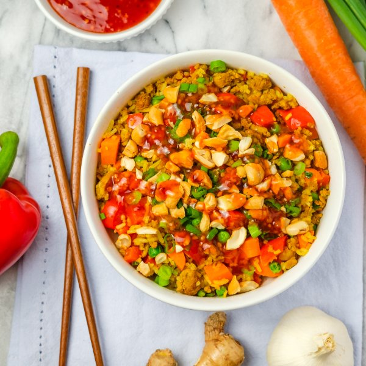

Indian-Style Fried Rice with Turkey, Carrots, Green Onions & Cashews

Prep Time
40 min
Nutrition (per serving)
661.8 kcalCalories
45.1 gProtein
63.3 gCarbs
26.4 gFat
Full nutrition table
| Calories | 661.8 kcal |
| Total fat | 26.4 g |
| Saturated fat | 5.7 g |
| Trans fat | 0.2 g |
| Cholesterol | 117.4 mg |
| Sodium | 230.6 mg |
| Carbohydrates | 63.3 g |
| Fiber | 8.1 g |
| Sugars | 9.2 g |
| Protein | 45.1 g |
| Potassium | 1109.6 mg |
| Calcium | 130.8 mg |
| Iron | 8 mg |
| Vitamin A | 440.1 IU |
| Vitamin C | 92.8 mg |
| Vitamin D | 23.8 IU |
Cookware
Ingredients
- 1 cupbasmati rice
- 4 mediumcarrots
- ¼ cupcashews, roasted unsalted
- 16 fl ozchicken or vegetable broth
- 1 cupfrozen peas
- 4 clovesgarlic
- 2 (1 inch) piecesginger root
- 1 small bunchgreen onions (scallions)
- 1 ½ lbground turkey
- 2red bell peppers
- black pepper
- chili-garlic sauce
- cumin, ground
- curry powder
- neutral vegetable oil
- paprika
- salt
Steps
- Using a strainer or colander, rinse the rice under cold, running water, then drain and transfer to a medium saucepan. Add broth and bring the mixture to a boil over high heat.1 cup basmati rice
16 fl oz (2 cups) chicken or vegetable broth - Meanwhile, wash and dry the fresh produce.4 medium carrots
2 red bell peppers
2 (1 inch) pieces ginger root
1 small bunch green onions (scallions) - Once the liquid comes to a boil, stir the mixture, cover the saucepan, and reduce heat to low. Cook rice until liquid is fully absorbed, 15-18 minutes. Once done, remove rice from the heat and let it stand, still covered, for 5 minutes.
- While the rice is cooking, peel, trim, and small dice carrots. Place in a medium bowl.
- Trim, seed, and small dice bell peppers. Add to the bowl with the carrots.
- Peel and mince ginger and garlic. Add both to the bowl.4 cloves garlic
- Preheat a large skillet over medium-high heat.
- While the skillet heats up, trim and cut green onions crosswise into thin pieces. Add half to the bowl and set aside. (Reserve remaining green onions for serving.)
- Once the skillet is hot, add oil and swirl to coat the bottom. Add turkey and spices; cook, breaking the meat apart with a spoon, until browned and crumbly, 4-5 minutes.2 tbsp neutral vegetable oil
1 ½ lb ground turkey
2 tbsp curry powder
2 tsp cumin, ground
2 tsp paprika
1 tsp salt
½ tsp black pepper - Meanwhile, roughly chop cashews.¼ cup cashews, roasted unsalted
- When the turkey is done, add veggies to the skillet. Continue to cook, stirring occasionally, until softened, 4-5 minutes. Remove from heat, add peas, and stir to combine; cover and set aside until the rice is done.1 cup frozen peas
- When the rice is done, add to the skillet. Return skillet to medium-high heat and continue to stir-fry until warmed through, 1-2 minutes more. Remove from heat.
- To serve, divide fried rice between plates or bowls; top with cashews, chili-garlic sauce, and reserved green onions. Enjoy!4 tsp chili-garlic sauce